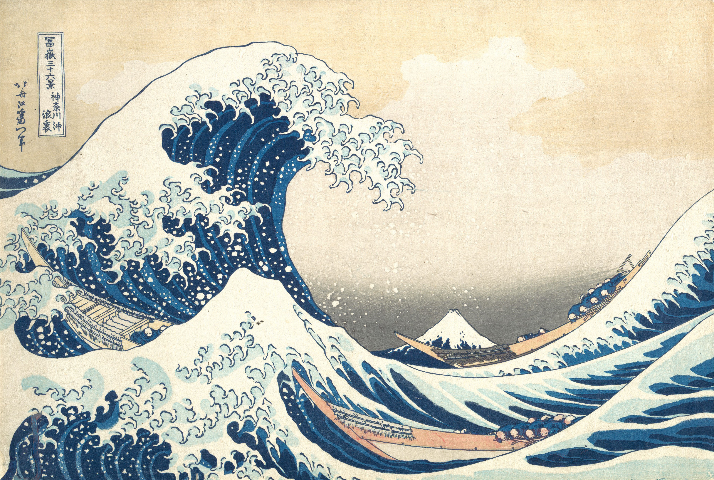
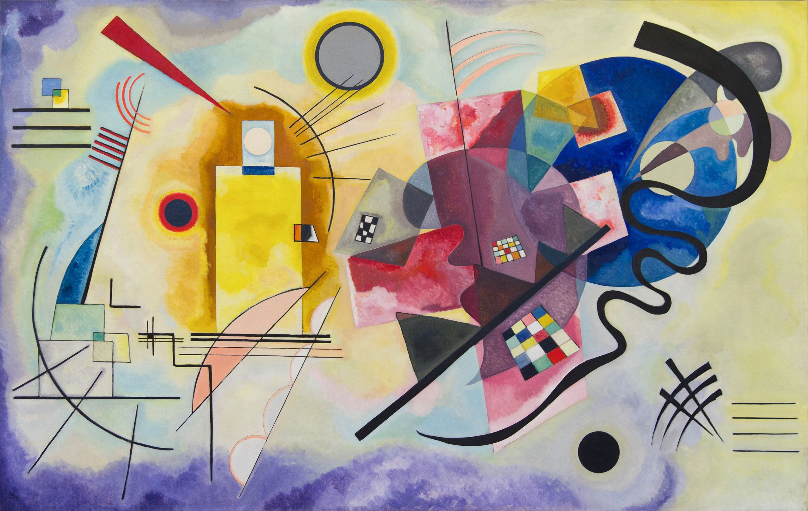
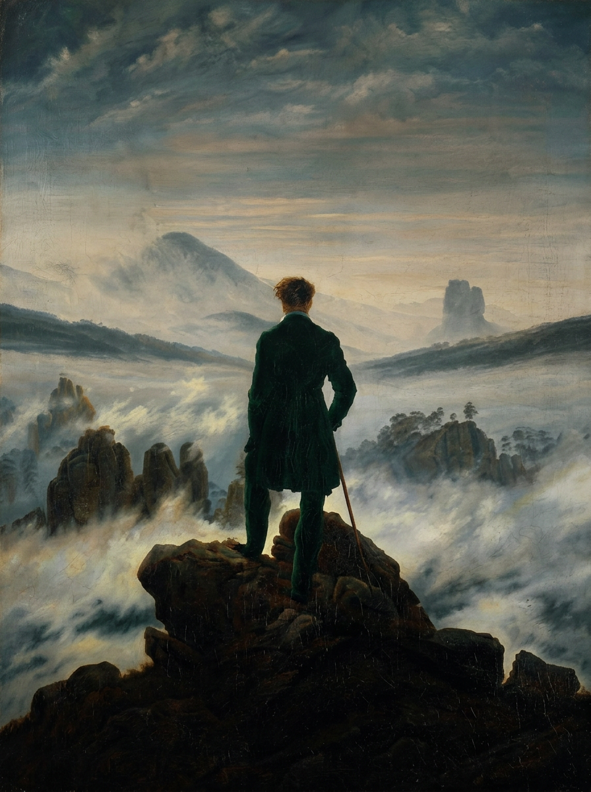
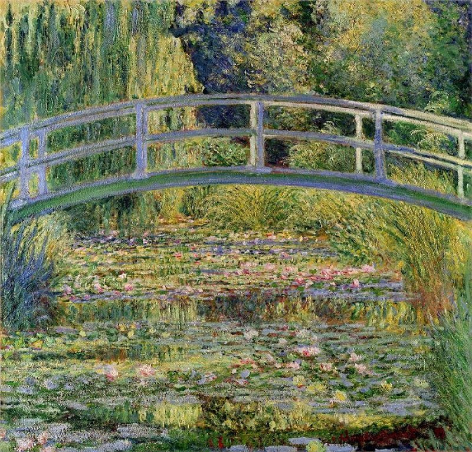
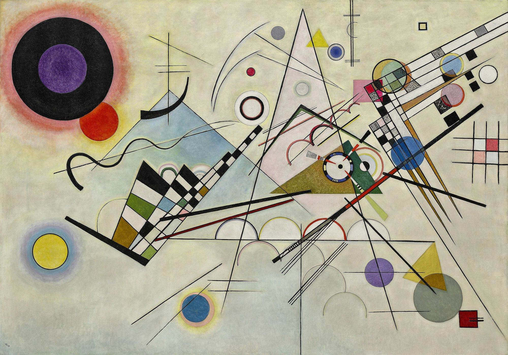
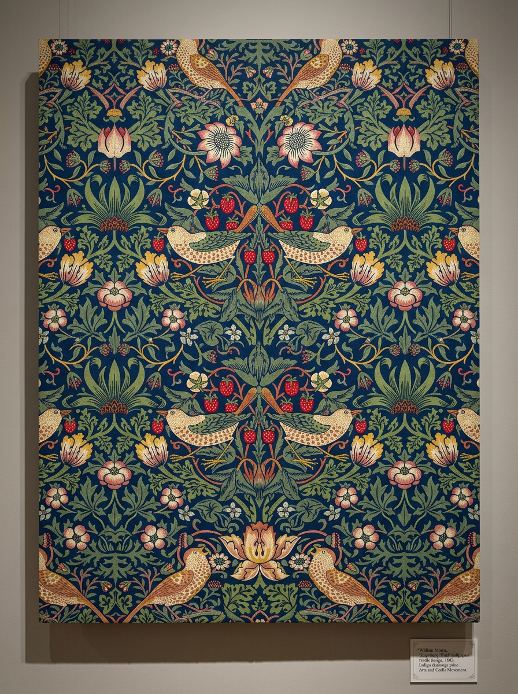
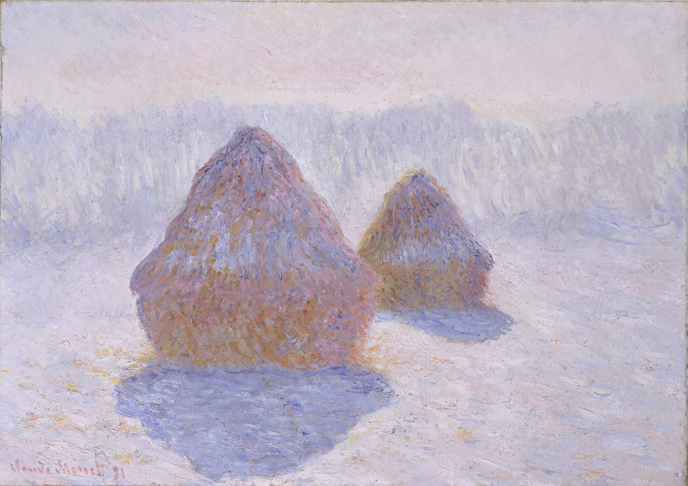

תכנית לימודים באמנות לבתי ספר
מקורות השראה באמנות
שבע יחידות שחוקרות מאין מגיעה יצירתיות. מתבוננים ביצירות, שואלים שאלות, ומתנסים בציור מתוך רגש, טבע, מוזיקה, זיכרון ותרבות.



מאין מגיעה יצירתיות?
בכל יחידה פוגשים מקור השראה אחר. מתבוננים, משוחחים ויוצרים עבודה אישית מתוך מה שעורר עניין.
- 00

יסודות ההשראה
לפני שיוצרים, לומדים לראות. התלמידים בוחנים איך המוח מארגן מידע חזותי, מגלים שלושה אופני ראייה ומתרגלים מעבר ביניהם.
בפיתוח - 01
חוויה אישית כמקור השראה
איך הופכים חוויה אישית לציור? התלמידים עובדים עם רגשות, זיכרונות ורישומים ביומן, ובוחנים איך לבטא אותם בקו, בצבע ובקומפוזיציה.
9 שיעורים - 02

טבע כמקור השראה
משושני המים של מונה עד גיאומטריית העלה. התלמידים מגלים כיצד העולם הטבעי עורר אמנים בכל התקופות.
4 שיעורים - 03

מוזיקה וריתמוס באמנות
אפשר לצייר צליל? התלמידים חוקרים סינאסתזיה אצל קנדינסקי, אמנות אבסטרקטית בהשראת ג׳אז ואיך ריתמוס הופך תנועה ויזואלית.
בפיתוח - 04

זיכרון וזהות
מתבוננים ביצירות של קאלו, שאגאל ואמנים נוספים, ובוחנים איך זיכרון מקבל צורה בציור. בעקבות ההתבוננות יוצרים דיוקן אישי.
בפיתוח - 05

תרבות וסמלים
אמנות כשפה תרבותית. התלמידים מפענחים סמלים ויזואליים ממסורות עולמיות ויוצרים עבודה שמכבדת את המורשת התרבותית.
בפיתוח - 06

פיתוח סגנון אישי
היחידה המסכמת. התלמידים משלבים את כל מה שלמדו לפיתוח הקול האמנותי שלהם.
בפיתוח
איך בנוי שיעור
כל שיעור מוקרן בכיתה מסך אחרי מסך, ומוביל מהתבוננות לעבודה מעשית.
מתבוננים
יצירה של אמן פותחת את השיעור, עם שאלה אחת שמזמינה להסתכל לאט.
בוחרים נקודת מוצא
רגש, זיכרון, מקום או צבע. כל תלמיד מוצא ממה להתחיל.
עובדים
הנחיות קצרות, שלב אחרי שלב, בקו, בצבע ובקומפוזיציה.
מתבוננים בעבודה
בסוף השיעור עוצרים, מסתכלים על מה שנוצר ושואלים מה גילינו.

נסו שיעור בעצמכם
השיעור לדוגמה פתוח לכולם. אפשר לעבור עליו מהטלפון, מהמחשב או על מסך בכיתה.
לשיעור לדוגמהרוצים להכניס את התכנית לבית הספר?
לשאלות, להצעת מחיר או לתיאום הדגמה, כתבו לנו.